Next: Bibliography
Up: Unforgeable Marker Sequences
Previous: A Convenient Test for
We observed in the table above that  converges to a limit,
which we will denote
converges to a limit,
which we will denote  . In fact, can
be calculated to a very high precision using the following,
rapidly converging, infinite series:
. In fact, can
be calculated to a very high precision using the following,
rapidly converging, infinite series:
We will prove this formula.
First, an easy argument shows that the sequence is a
decreasing sequence, bounded below by zero.
Hence the limit exists. Now define
a generating function
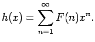
It is clear that  has radius of convergence at least 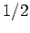.
has radius of convergence at least 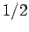.
Next, we show that
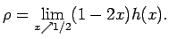
To see this, multiply out to obtain
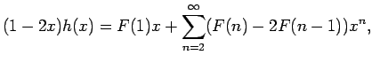
and thus
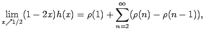
which may be seen to be a telescoping series that converges to .
Applying the recurrence relation for the sequence  ,
we see that
,
we see that
that is
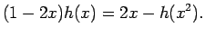
We see immediately that
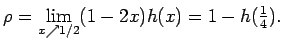
Applying this relation again, we get that
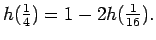
Again, we see that
Continuing in this way, and multiplying out, we see that
 |
 |
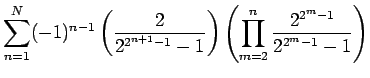 |
|
| |
|
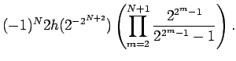 |
|
Letting
 , and noting that
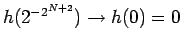,
it is readily seen that the last term in the above expression
converges to zero, and hence we obtain the formula for that we
stated above.
, and noting that
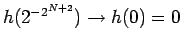,
it is readily seen that the last term in the above expression
converges to zero, and hence we obtain the formula for that we
stated above.
Next: Bibliography
Up: Unforgeable Marker Sequences
Previous: A Convenient Test for
Stephen Montgomery-Smith
2002-10-30